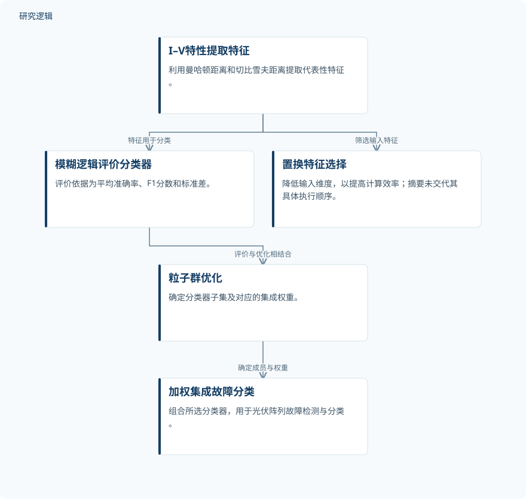

摘要解读
融合概率与逻辑机器学习的光伏故障诊断方法
Integrated Probabilistic and Logic-Based Machine Learning Approach for Photovoltaic Fault Diagnosis
解读更新 2026-11-10 10:59 · 依据公开摘要整理，未核验全文细节
光伏阵列故障诊断不仅要识别异常，还要在不同环境和故障条件下保持可靠。本文将模糊逻辑与粒子群优化结合，用于筛选分类器并优化集成权重，值得关注的是其如何兼顾分类准确性、稳定性与计算效率。
文章目录
光伏诊断的难点：复杂条件下能否保持可靠
摘要指出，人工智能已改善光伏故障诊断，但现有方法仍可能在严苛故障条件下表现不佳、需要大量训练数据，或在多故障分类中缺乏稳健性。本文针对光伏阵列故障检测与分类提出集成学习框架，重点是如何评价、选择并组合多个分类器。
从电流–电压特征到分类器筛选与加权
研究首先利用曼哈顿距离和切比雪夫距离，从光伏电流–电压（I–V）特性中提取代表性特征。模糊逻辑系统根据平均准确率、F1分数和标准差评价多个机器学习分类器；粒子群优化则确定分类器子集及相应的集成权重。框架还采用置换特征选择，以降低输入维度并提高计算效率。
验证使用实验数据，涵盖正常运行以及线间故障、开路故障和退化故障，并涉及不同辐照度、温度、失配和故障阻抗条件。这些条件构成了摘要明确披露的验证范围，但具体取值和数据组织方式尚未给出。
依据摘要整理的特征处理与集成学习关系


仅概括摘要明确陈述的方法关系，不表示完整训练流程、具体实验配置或论文原图。
下载 SVG图示关系说明
实线表示相邻阶段的信息流，虚线表示跨阶段联系或反馈。
I–V特性提取特征 → 模糊逻辑评价分类器：特征用于分类；模糊逻辑评价分类器 → 粒子群优化：评价与优化相结合；粒子群优化 → 加权集成故障分类：确定成员与权重；I–V特性提取特征 → 置换特征选择：筛选输入特征
平均准确率达98.78%，优于常规融合策略
摘要报告，优化后的加权集成取得了98.78%的平均分类准确率，优于常规融合策略，并在严苛故障条件下保持可靠表现。作者据此认为，FL–PSO框架能够支持稳健且计算高效的光伏故障诊断；但摘要没有列出各故障类别的独立指标、比较差值或计算开销数值。
平均成绩尚不能说明哪些验证细节
仅凭摘要，无法判断实验样本量、类别分布、训练与测试划分，以及是否采用独立设备或独立场景验证。常规融合策略的具体构成、结果波动及各环节的单独贡献也未披露，因此不能量化性能优势或归因其来源。
摘要未明确“严苛故障条件”的具体边界，也不足以判断多故障分类是否包含同时发生的复合故障。这些属于当前资料无法确认的范围，并不意味着论文没有开展相关分析；现有信息也不能直接证明框架减少了训练数据需求。
阅读启发：关注分类器如何被评价与组合
阅读启发：对智能运维而言，本文提供了一个值得关注的思路——不只比较单个模型的准确率，还将F1分数和标准差纳入分类器评价。进一步阅读时，可重点核对这些指标如何进入模糊逻辑规则、粒子群优化采用何种目标，以及平均成绩是否掩盖了特定故障或工况下的差异。
以上为本站阅读启发与建议，不是论文已验证的结论。